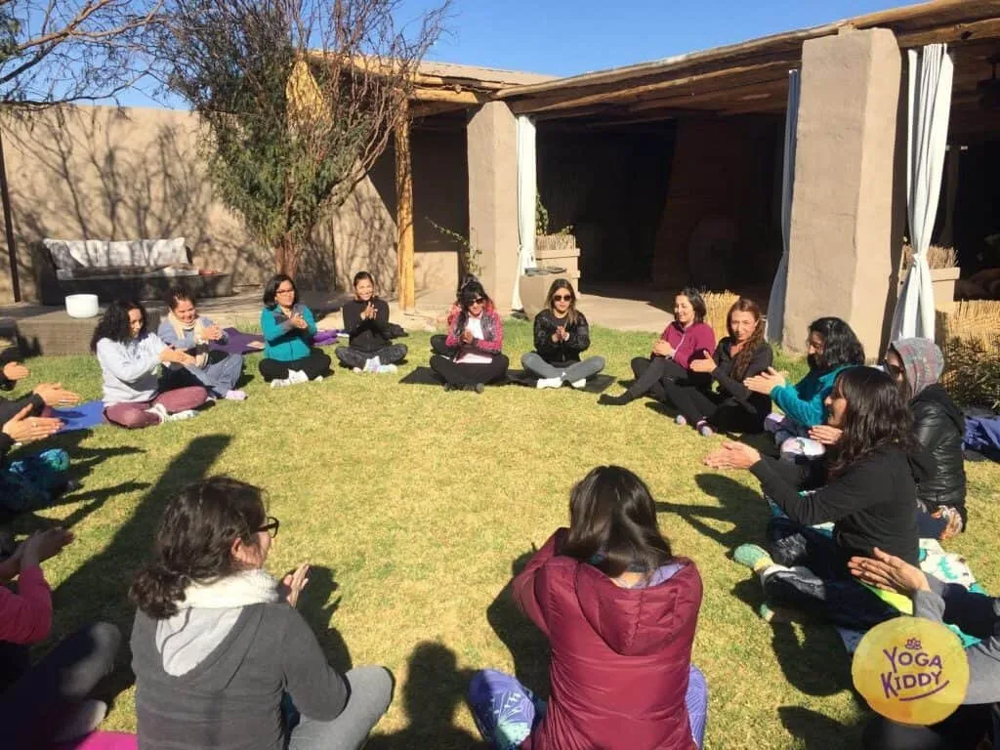
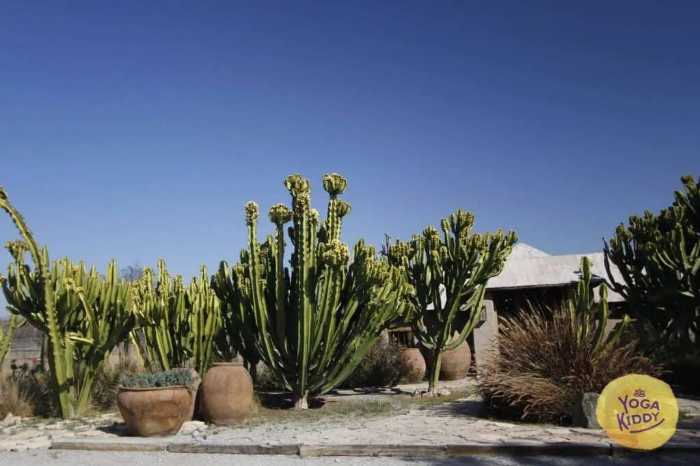

No es solo un aprendizaje, es una oportunidad de explorar nuestro ser y encontrarnos.
Ximena es una de nuestras alumnas, ella participó en la Formación Internacional de Monitor de Yoga Infantil en Copiapó, Chile.
Ella asegura que está maravillada, ya que la experiencia le permitió conectarse consigo misma, conocerse, valorar sus vivencias, y a partir de allí replantearse su futuro.
Esto siempre será parte de su ser, todo lo que haga a partir de ahora estará vinculado con su vivencia y con la meditación. ‘
Lo más significativo es que esto le ha permitido pensar tanto en ella como en los suyos, sus familiares, ya que en YogaKiddy pudo iniciar una conversación que abrirá puertas en su hogar que eran necesarias para su bienestar.
Aprender de los niños es un privilegio.
María Soledad, otra alumna que participó en la capacitación de Monitor de Yoga Infantil en Copiapo, encontró en la experiencia algo genial y entretenido, así como un aprendizaje desde el interior hacia el exterior, lo cual es esencial en la meditación.
Ella entendió que no se trata de algo ajeno al instructor, sino de algo en lo que se aprende de todo, y se cuestionan muchas nociones preconcebidas de la vida.
María Soledad valoró con especial atención la importancia de aprender de los niños, y no solo de enseñarles. Ella recomienda 100% la formación en Monitor de Yoga Infantil en YogaKiddy.
La energía positiva nos ayuda a trabajar por nuestra comunidad
Verónica, quien formó parte del instructorado en Formación Internacional de Monitor de Yoga Infantil, le pareció una clase genial, y está muy agradecida con las Monitoras de Yoga Infantil que fueron desde tan lejos a ayudar a formar a más profesionales en esta valiosa práctica.
Ella se va cargada de energía positiva y material para entregarle a los niños de Copiapo.
Asimismo, Verónica espera cumplir las expectativas de las maestras y lo recomienda al 100%, ya que no solo recibió amor, sino herramientas significativas que está deseosa de poder transmitir a los niños de su comunidad.